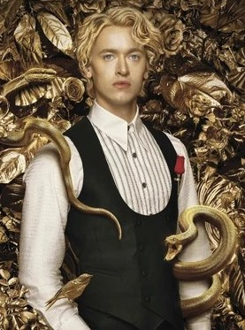

C
Mentor

Coriolanus SnowMentor de Lucy Gray
Coriolanus Snow (jovem)
Mentor / estudante da Capital
- Idade 18 anos
- Origem Capital
- Papel Futuro presidente de Panem
Ambicioso e arruinado financeiramente, vê na mentoria uma chance de recuperar o prestígio da família, e começa ali sua transformação em tirano.